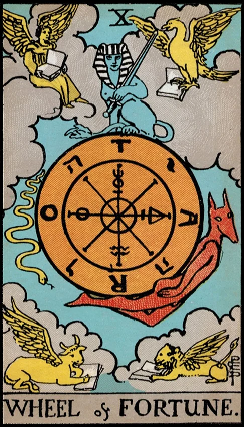

Internal Block
You may be stuck because you’re resisting change or trying to control a cycle that is meant to unfold on its own. Part of you may fear losing stability, or you may be waiting for the perfect moment instead of moving with the rhythm of life.
Psychological Frame
This individuation phase teaches surrender to larger forces — timing, cycles, and fate. The Wheel symbolizes the dance between personal agency and life’s natural turning. Resistance comes from clinging to the past or fearing the unpredictability of the future.
Where You May Be Resisting
- Wanting certainty before acting
- Fighting a chapter that is clearly shifting
- Believing momentum must come from willpower alone
- Feeling powerless when life changes suddenly
Coaching Question
“Where am I trying to control what is meant to unfold naturally?”
Practice
- Identify one change already happening — name it without resisting it.
- Take one small step with the current instead of against it.
- Release one expectation that no longer fits the moment.
Core Insight
“Life moves in cycles — your power is in how you meet the turning.”